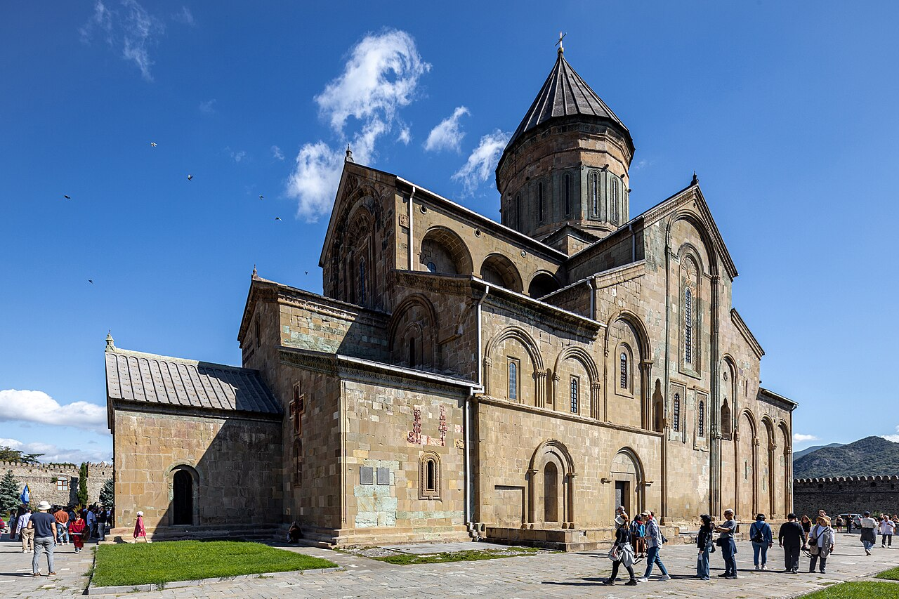
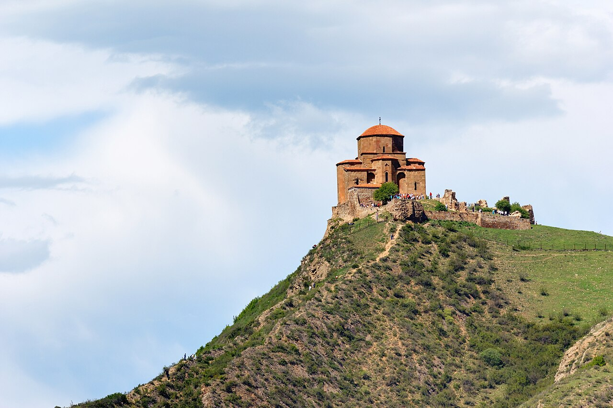
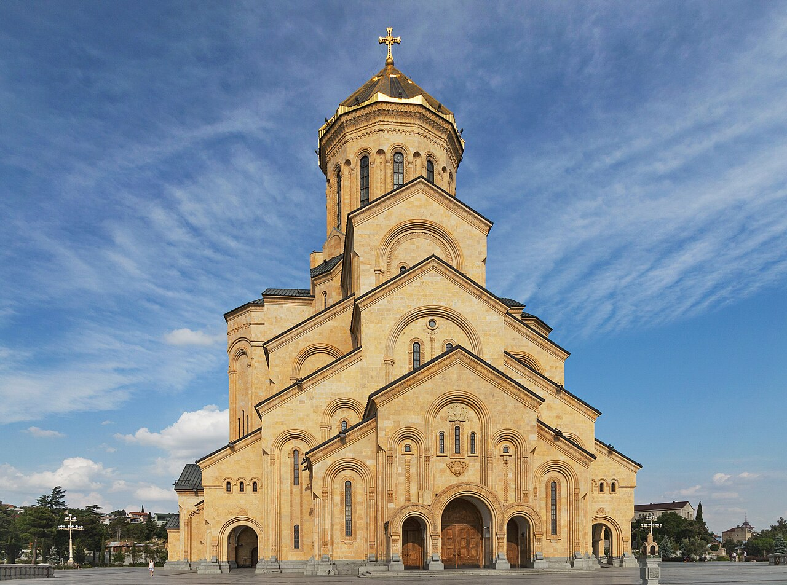
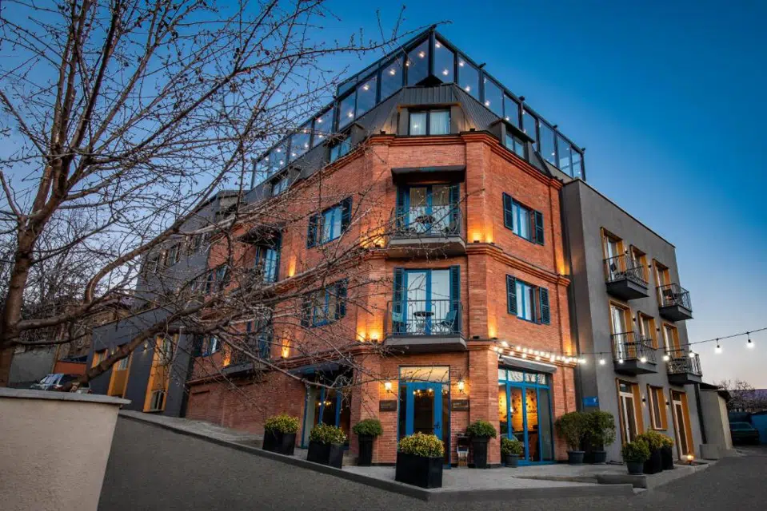

☕ Breakfast at Kviria
Telavi · Hotel garden
One more leisurely Kakhetian morning. Coffee, fresh bread, a soft-boiled egg, maybe a glass of qvevri rkatsiteli (it is wine country, after all).

Back to where it began. The morning is yours — Kakheti goodbye, slow drive west — but stop at Mtskheta on the way in: the cathedral where Georgia was first Christianised, the monastery on the bluff above. Tonight, one last evening on the river, one last dinner, one last walk through the lanes.
One more leisurely Kakhetian morning. Coffee, fresh bread, a soft-boiled egg, maybe a glass of qvevri rkatsiteli (it is wine country, after all).
The S5 climbs over the Gombori Pass — last of the mountain driving — then drops down into the broad plain around the capital. Aim to be at Mtskheta by midday.
The cathedral where Georgia was first Christianised in the 4th century — beneath the floor, says tradition, is buried the robe of Christ. The current building is 11th century, and walking into the nave is one of those moments. Mtskheta itself is small, cobbled, easy to wander for half an hour.
Mtskheta has a couple of good local spots known for lobio — slow-cooked red bean stew with cornbread. A small, hot, deeply satisfying meal.
The 6th-century church on the cliff — small, severe, and standing at the confluence of the Aragvi and Mtkvari rivers. The view down to Mtskheta is one of the great Georgian images. Twenty minutes is enough.

Closer to the airport for tomorrow's flight, and on the right side of the river for tonight's sunset. Drop bags, shower, change into something a little nicer for the last evening.
The enormous gold-domed cathedral that dominates the Tbilisi skyline — finished in 2004, but the gardens around it are calm and the view back across the city catches everything in gold light. Walk up Makhata hill afterwards for the wider sunset over the old town.

The restaurant built around a 19th-century cookbook by Barbara Jorjadze, the first Georgian woman cookbook author. Forgotten dishes, slow service in the best sense, an old-fashioned room. The bottle list is long — ask for what's open by the glass and trust the answer.
If energy holds: one last drink at g.Vino in Vake, or amber-wine flight at 8000 Vintages. Otherwise — bridge of peace on the way home, then sleep.
